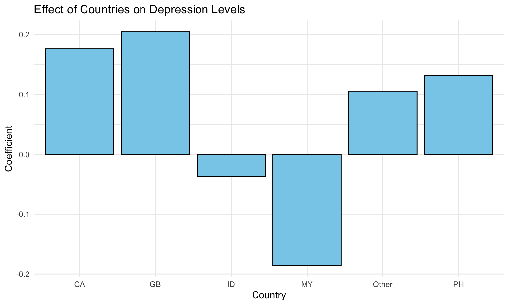
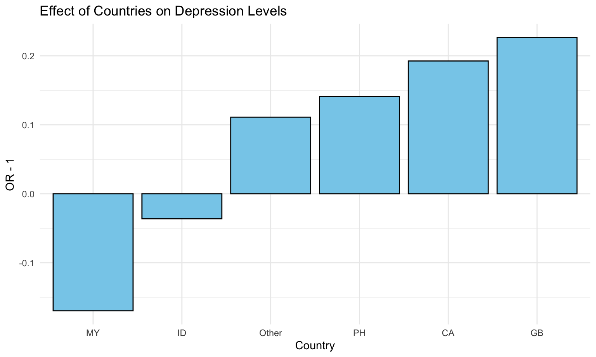
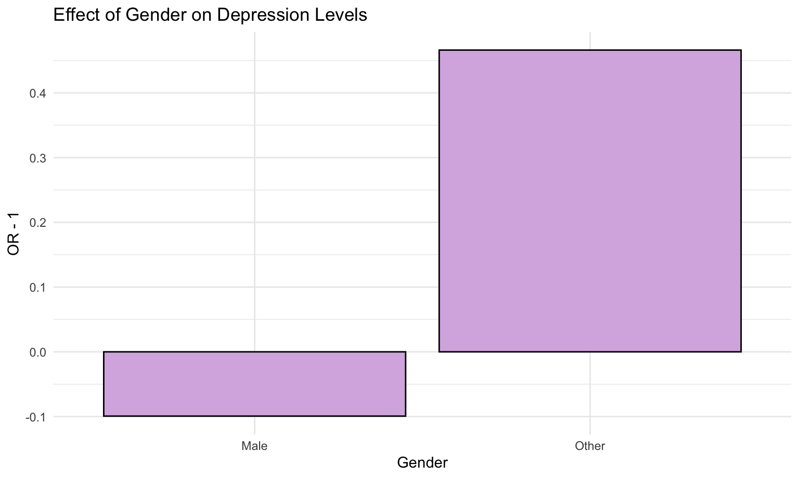
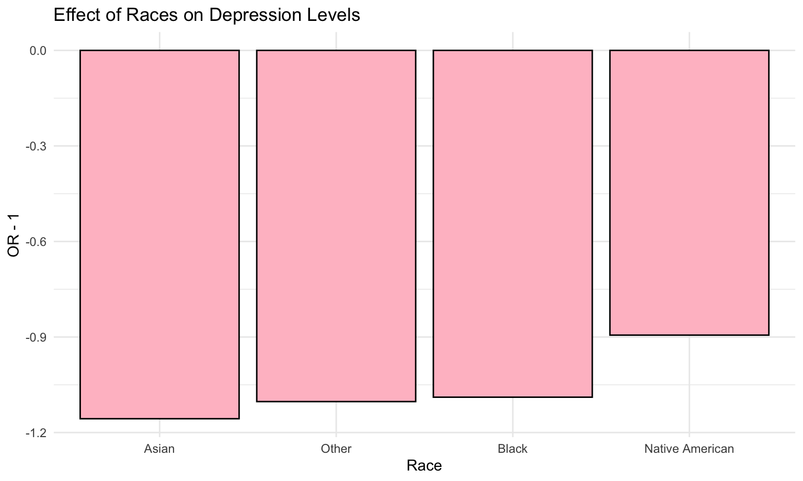

Logistic Model
Huanyu Chen, Shaolei Ma
2023-12-04
The goal is to fit an ordered logit model.
Independent Variables
First, test the distribution of independent variables.
dass_new = read_csv("data/dass_new.csv")
dass_new |>
dplyr::select(age, everything()) |>
mutate(across(country:depression_level, factor)) |>
summary()## age country education urban
## Min. :13.00 MY :16932 Graduate degree : 3981 Rural : 6295
## 1st Qu.:19.00 US : 5989 High school :11374 Suburban:10283
## Median :21.00 GB : 891 Less than high school: 2997 Urban :13731
## Mean :23.45 CA : 752 University degree :11957
## 3rd Qu.:25.00 ID : 746
## Max. :99.00 PH : 581
## (Other): 4418
## gender religion orientation
## Female:23137 Muslim :17204 Asexual : 1649
## Male : 6754 Atheist : 2943 Bisexual : 3921
## Other : 418 Agnostic : 2406 Heterosexual:20259
## Christian (Catholic): 2359 Homosexual : 1548
## Christian (Other) : 1699 Other : 2932
## Other : 1343
## (Other) : 2355
## race married
## Arab : 228 Currently married : 3331
## Asian :18041 Never married :26207
## Black : 432 Previously married: 771
## Indigenous Australian: 12
## Native American : 159
## Other : 3621
## White : 7816
## depression_level
## Extremely severe:10176
## Mild : 2921
## Moderate : 5433
## Normal : 6832
## Severe : 4947
##
## Some categories contain few samples. For the efficacy of the model, we regroup the independent variables following the standards below:
country: Group the country with less than 500 samples into “Other”, and set “US” to be the reference level.education: Order the variable by the length of education.race: We follow standards on race and ethnicity to include only “Asian”, “Black”, “Native American”, “White”, and make other categories “Other”. We set “White” to be the reference level.religion: We conclude “Christian (Catholic)”, “Christian (Mormon)”, “Christian (Other)”, “Christian (Protestant)” into “Christian”, and set it as the reference level.orientation: Set the “Heterosexual” to be the reference level.married: Order the variable by marriage status.
dass_fit_df =
dass_new |>
mutate(
country = relevel(as.factor(ifelse(country %in% c("MY", "US", "GB", "CA", "ID", "PH"), country, "Other")), ref = "US"),
education = factor(education, levels = c("Less than high school", "High school", "University degree", "Graduate degree")),
race = relevel(as.factor(ifelse(race %in% c("Arab", "Indigenous Australian"), "Other", race)), ref = "White"),
religion = relevel(as.factor(ifelse(substr(religion, 1, 9) == "Christian", "Christian", religion)), "Christian"),
orientation = relevel(as.factor(orientation), "Heterosexual"),
married = factor(married, levels = c("Never married", "Currently married", "Previously married")),
depression_level = factor(depression_level, levels = c("Normal", "Mild", "Moderate", "Severe", "Extremely severe"))
)
dass_fit_df |> summary()## country education urban
## US : 5989 Less than high school: 2997 Length:30309
## CA : 752 High school :11374 Class :character
## GB : 891 University degree :11957 Mode :character
## ID : 746 Graduate degree : 3981
## MY :16932
## Other: 4418
## PH : 581
## gender age religion orientation
## Length:30309 Min. :13.00 Muslim :17204 Heterosexual:20259
## Class :character 1st Qu.:19.00 Christian: 5318 Asexual : 1649
## Mode :character Median :21.00 Atheist : 2943 Bisexual : 3921
## Mean :23.45 Agnostic : 2406 Homosexual : 1548
## 3rd Qu.:25.00 Other : 1343 Other : 2932
## Max. :99.00 Hindu : 531
## (Other) : 564
## race married depression_level
## White : 7816 Never married :26207 Normal : 6832
## Asian :18041 Currently married : 3331 Mild : 2921
## Black : 432 Previously married: 771 Moderate : 5433
## Native American: 159 Severe : 4947
## Other : 3861 Extremely severe:10176
##
## Model Fitting
First fit a model without variables selection.
dass_fit =
dass_fit_df |>
polr(depression_level ~ ., data = _)
(fit_s =
dass_fit |>
summary())## Call:
## polr(formula = depression_level ~ ., data = dass_fit_df)
##
## Coefficients:
## Value Std. Error t value
## countryCA 0.148517 0.071130 2.0880
## countryGB 0.171354 0.067062 2.5552
## countryID 0.043053 0.079163 0.5439
## countryMY -0.008007 0.050543 -0.1584
## countryOther 0.102717 0.039048 2.6305
## countryPH 0.264462 0.087392 3.0262
## educationHigh school -0.150185 0.040509 -3.7075
## educationUniversity degree -0.376834 0.044291 -8.5082
## educationGraduate degree -0.530279 0.052303 -10.1386
## urbanSuburban -0.027283 0.029139 -0.9363
## urbanUrban 0.046331 0.027761 1.6689
## genderMale -0.166471 0.025998 -6.4032
## genderOther 0.339713 0.096112 3.5346
## age -0.007523 0.001868 -4.0267
## religionAgnostic 0.187629 0.046183 4.0627
## religionAtheist 0.260434 0.044725 5.8230
## religionBuddhist -0.210089 0.095058 -2.2101
## religionHindu 0.099165 0.087998 1.1269
## religionJewish -0.044442 0.184671 -0.2407
## religionMuslim 0.019758 0.045019 0.4389
## religionOther 0.193342 0.056459 3.4245
## religionSikh 0.036949 0.272258 0.1357
## orientationAsexual 0.173086 0.046812 3.6975
## orientationBisexual 0.374809 0.032818 11.4208
## orientationHomosexual 0.286605 0.048017 5.9688
## orientationOther 0.195966 0.036306 5.3976
## raceAsian -0.091787 0.044414 -2.0666
## raceBlack -0.101452 0.091268 -1.1116
## raceNative American 0.136167 0.146638 0.9286
## raceOther -0.063766 0.044043 -1.4478
## marriedCurrently married -0.528618 0.040748 -12.9730
## marriedPreviously married 0.041553 0.075500 0.5504
##
## Intercepts:
## Value Std. Error t value
## Normal|Mild -1.6935 0.0604 -28.0233
## Mild|Moderate -1.1882 0.0600 -19.8029
## Moderate|Severe -0.4097 0.0597 -6.8678
## Severe|Extremely severe 0.2936 0.0597 4.9209
##
## Residual Deviance: 91341.20
## AIC: 91413.20Test the parallel assumption.
car::poTest(dass_fit)##
## Tests for Proportional Odds
## polr(formula = depression_level ~ ., data = dass_fit_df)
##
## b[polr] b[>Normal] b[>Mild] b[>Moderate]
## Overall
## countryCA 1.49e-01 1.82e-01 1.54e-01 1.64e-01
## countryGB 1.71e-01 2.21e-01 1.44e-01 1.46e-01
## countryID 4.31e-02 1.63e-01 1.53e-02 4.50e-02
## countryMY -8.01e-03 1.10e-01 -9.42e-03 -2.97e-02
## countryOther 1.03e-01 9.00e-02 6.84e-02 1.29e-01
## countryPH 2.64e-01 3.82e-01 3.76e-01 2.69e-01
## educationHigh school -1.50e-01 -1.31e-01 -1.25e-01 -1.47e-01
## educationUniversity degree -3.77e-01 -3.64e-01 -3.57e-01 -3.86e-01
## educationGraduate degree -5.30e-01 -5.59e-01 -5.32e-01 -5.07e-01
## urbanSuburban -2.73e-02 1.83e-02 3.45e-02 -2.71e-02
## urbanUrban 4.63e-02 7.74e-02 8.22e-02 4.57e-02
## genderMale -1.66e-01 -2.18e-01 -1.89e-01 -1.45e-01
## genderOther 3.40e-01 6.00e-01 5.24e-01 3.05e-01
## age -7.52e-03 -1.18e-02 -1.06e-02 -8.09e-03
## religionAgnostic 1.88e-01 1.34e-01 1.90e-01 2.27e-01
## religionAtheist 2.60e-01 1.76e-01 2.38e-01 2.37e-01
## religionBuddhist -2.10e-01 -3.18e-01 -1.88e-01 -2.02e-01
## religionHindu 9.92e-02 9.13e-02 3.07e-02 1.28e-01
## religionJewish -4.44e-02 -1.28e-02 -1.91e-01 3.51e-02
## religionMuslim 1.98e-02 2.02e-02 8.06e-02 3.27e-02
## religionOther 1.93e-01 1.82e-01 1.80e-01 2.04e-01
## religionSikh 3.69e-02 1.24e-01 2.65e-01 6.49e-02
## orientationAsexual 1.73e-01 8.23e-02 1.37e-01 2.17e-01
## orientationBisexual 3.75e-01 4.36e-01 4.06e-01 3.67e-01
## orientationHomosexual 2.87e-01 3.52e-01 2.97e-01 2.59e-01
## orientationOther 1.96e-01 2.10e-01 1.87e-01 2.07e-01
## raceAsian -9.18e-02 -1.97e-01 -1.54e-01 -7.88e-02
## raceBlack -1.01e-01 -3.18e-01 -1.74e-01 -3.18e-02
## raceNative American 1.36e-01 2.45e-01 2.22e-01 2.19e-01
## raceOther -6.38e-02 -1.77e-01 -1.33e-01 -3.46e-02
## marriedCurrently married -5.29e-01 -4.77e-01 -4.85e-01 -5.13e-01
## marriedPreviously married 4.16e-02 4.13e-02 5.71e-02 1.10e-01
## b[>Severe] Chisquare df Pr(>Chisq)
## Overall 168.29 96 7.3e-06 ***
## countryCA 1.14e-01 0.84 3 0.839
## countryGB 1.77e-01 1.80 3 0.615
## countryID 1.26e-02 4.70 3 0.195
## countryMY -5.16e-02 8.85 3 0.031 *
## countryOther 1.05e-01 3.32 3 0.345
## countryPH 1.76e-01 3.33 3 0.344
## educationHigh school -1.86e-01 1.68 3 0.641
## educationUniversity degree -4.25e-01 1.64 3 0.650
## educationGraduate degree -5.42e-01 1.15 3 0.766
## urbanSuburban -8.24e-02 10.81 3 0.013 *
## urbanUrban 4.01e-03 5.40 3 0.145
## genderMale -1.50e-01 5.67 3 0.129
## genderOther 2.99e-01 4.14 3 0.247
## age -2.29e-04 30.13 3 1.3e-06 ***
## religionAgnostic 1.90e-01 3.47 3 0.325
## religionAtheist 2.99e-01 5.55 3 0.136
## religionBuddhist -1.16e-01 4.70 3 0.195
## religionHindu 1.20e-01 2.20 3 0.532
## religionJewish -3.46e-02 3.08 3 0.379
## religionMuslim -2.39e-02 5.67 3 0.129
## religionOther 2.04e-01 0.20 3 0.978
## religionSikh -7.04e-02 1.22 3 0.748
## orientationAsexual 2.06e-01 5.93 3 0.115
## orientationBisexual 3.62e-01 2.64 3 0.450
## orientationHomosexual 2.66e-01 2.27 3 0.519
## orientationOther 1.85e-01 1.13 3 0.770
## raceAsian -1.59e-02 8.57 3 0.036 *
## raceBlack -1.11e-02 8.62 3 0.035 *
## raceNative American 5.56e-02 1.39 3 0.709
## raceOther 1.15e-04 9.10 3 0.028 *
## marriedCurrently married -6.06e-01 6.76 3 0.080 .
## marriedPreviously married -8.04e-02 8.10 3 0.044 *
## ---
## Signif. codes: 0 '***' 0.001 '**' 0.01 '*' 0.05 '.' 0.1 ' ' 1Because the overall \(p-value < 0.001\), we reject the null hypothesis and conclude that the parallel assumption is not met.
To meet the parallel assumption, we try the following two methods:
- Select independent variables: Because we think
religionandrace,marriedandorientation,countryandurbanare strongly correlated with each other, and we care more aboutrace,orientation, andcountry, first deletereligion,married, andurban. We also deleteeducationto meet the parallel assumption. - Regroup dependent variable: Regroup
depression_levelinto “Moderate or Below”, “Severe”, “Extremely severe”.
dass_fit_df =
dass_fit_df |>
mutate(depression_level = factor(case_match(
depression_level,
"Normal" ~ "Moderate or Below",
"Mild" ~ "Moderate or Below","Moderate" ~ "Moderate or Below",
"Severe" ~ "Severe",
"Extremely severe" ~ "Extremely severe"
), level = c("Moderate or Below", "Severe", "Extremely severe")))
dass_fit1 =
dass_fit_df |>
polr(depression_level ~ country + gender + age + orientation + race, data = _)
dass_fit1 |> poTest()##
## Tests for Proportional Odds
## polr(formula = depression_level ~ country + gender + age + orientation +
## race, data = dass_fit_df)
##
## b[polr] b[>Moderate or Below] b[>Severe] Chisquare df
## Overall 26.43 17
## countryCA 0.17607 0.19690 0.15297 0.50 1
## countryGB 0.20429 0.19144 0.22882 0.46 1
## countryID -0.03701 -0.01653 -0.06773 0.57 1
## countryMY -0.18594 -0.16470 -0.22038 2.40 1
## countryOther 0.10529 0.11040 0.09276 0.30 1
## countryPH 0.13180 0.16664 0.09162 1.01 1
## genderMale -0.10458 -0.10721 -0.10290 0.04 1
## genderOther 0.38262 0.38336 0.38755 0.00 1
## age -0.02532 -0.02674 -0.02206 17.25 1
## orientationAsexual 0.22638 0.23486 0.22828 0.03 1
## orientationBisexual 0.40403 0.40507 0.40757 0.01 1
## orientationHomosexual 0.29795 0.28623 0.30345 0.17 1
## orientationOther 0.22051 0.23073 0.21375 0.27 1
## raceAsian -0.15662 -0.17315 -0.13328 1.31 1
## raceBlack -0.08899 -0.07969 -0.07401 0.01 1
## raceNative American 0.10589 0.19327 0.02714 1.40 1
## raceOther -0.10281 -0.11014 -0.09253 0.24 1
## Pr(>Chisq)
## Overall 0.067 .
## countryCA 0.480
## countryGB 0.496
## countryID 0.451
## countryMY 0.121
## countryOther 0.584
## countryPH 0.316
## genderMale 0.850
## genderOther 0.960
## age 3.3e-05 ***
## orientationAsexual 0.873
## orientationBisexual 0.929
## orientationHomosexual 0.678
## orientationOther 0.601
## raceAsian 0.252
## raceBlack 0.942
## raceNative American 0.236
## raceOther 0.627
## ---
## Signif. codes: 0 '***' 0.001 '**' 0.01 '*' 0.05 '.' 0.1 ' ' 1The model meets the parallel assumption at \(\alpha=0.05\) level (with an overall \(p = 0.067 > 0.05\)).
dass_fit1 |> summary()## Call:
## polr(formula = depression_level ~ country + gender + age + orientation +
## race, data = dass_fit_df)
##
## Coefficients:
## Value Std. Error t value
## countryCA 0.17607 0.073979 2.3799
## countryGB 0.20429 0.069477 2.9405
## countryID -0.03701 0.081140 -0.4561
## countryMY -0.18594 0.043530 -4.2716
## countryOther 0.10529 0.039054 2.6959
## countryPH 0.13180 0.088407 1.4908
## genderMale -0.10458 0.027345 -3.8244
## genderOther 0.38262 0.097990 3.9047
## age -0.02532 0.001429 -17.7177
## orientationAsexual 0.22638 0.048992 4.6208
## orientationBisexual 0.40403 0.033836 11.9406
## orientationHomosexual 0.29795 0.050291 5.9245
## orientationOther 0.22051 0.038272 5.7617
## raceAsian -0.15662 0.042257 -3.7064
## raceBlack -0.08899 0.094209 -0.9447
## raceNative American 0.10589 0.150678 0.7027
## raceOther -0.10281 0.043678 -2.3539
##
## Intercepts:
## Value Std. Error t value
## Moderate or Below|Severe -0.6896 0.0476 -14.4866
## Severe|Extremely severe 0.0067 0.0474 0.1414
##
## Residual Deviance: 60223.12
## AIC: 60261.12The estimated model can be written as: \[\begin{align*} \text{logit}(\hat P(\text{Depression Level} \leq \text{Severe})) &= -0.69 \\ &+ 0.18 \times I(\text{country} = \text{CA}) \\ &+ 0.20 \times I(\text{country} = \text{GB}) \\ &- 0.04 \times I(\text{country} = \text{ID}) \\ &- 0.19 \times I(\text{country} = \text{MY}) \\ &+ 0.13 \times I(\text{country} = \text{PH}) \\ &+ 0.11 \times I(\text{country} = \text{Other}) \\ &- 0.10 \times I(\text{gender} = \text{Male}) \\ &+ 0.38 \times I(\text{gender} = \text{Other}) \\ &- 0.03 \times \text{age} \\ &+ 0.23 \times I(\text{orientation} = \text{Asexual}) \\ &+ 0.40 \times I(\text{orientation} = \text{Bisexual}) \\ &+ 0.30 \times I(\text{orientation} = \text{Homosexual}) \\ &+ 0.22 \times I(\text{orientation} = \text{Other}) \\ &- 0.16 \times I(\text{race} = \text{Asian}) \\ &- 0.09 \times I(\text{race} = \text{Black}) \\ &+ 0.11 \times I(\text{race} = \text{Native American}) \\ &- 0.10 \times I(\text{race} = \text{Other}) \end{align*}\]
\[\begin{align*} \text{logit}(\hat P(\text{Depression Level} \leq \text{Extremely Severe})) &= 0.01 \\ &+ 0.18 \times I(\text{country} = \text{CA}) \\ &+ 0.20 \times I(\text{country} = \text{GB}) \\ &- 0.04 \times I(\text{country} = \text{ID}) \\ &- 0.19 \times I(\text{country} = \text{MY}) \\ &+ 0.13 \times I(\text{country} = \text{PH}) \\ &+ 0.11 \times I(\text{country} = \text{Other}) \\ &- 0.10 \times I(\text{gender} = \text{Male}) \\ &+ 0.38 \times I(\text{gender} = \text{Other}) \\ &- 0.03 \times \text{age} \\ &+ 0.23 \times I(\text{orientation} = \text{Asexual}) \\ &+ 0.40 \times I(\text{orientation} = \text{Bisexual}) \\ &+ 0.30 \times I(\text{orientation} = \text{Homosexual}) \\ &+ 0.22 \times I(\text{orientation} = \text{Other}) \\ &- 0.16 \times I(\text{race} = \text{Asian}) \\ &- 0.09 \times I(\text{race} = \text{Black}) \\ &+ 0.11 \times I(\text{race} = \text{Native American}) \\ &- 0.10 \times I(\text{race} = \text{Other}) \end{align*}\]
Effect of Countries on Depression Levels
# Extract coefficients for countries
pos_country = str_starts(names(dass_fit1$coefficients), "country")
country_coefficients <- data.frame(
country = substr(names(dass_fit1$coefficients)[pos_country], 8, 20),
coefficient = dass_fit1$coefficients[pos_country]
)
# Plotting coefficients for countries
ggplot(country_coefficients, aes(x = country, y = coefficient)) +
geom_bar(stat = "identity", fill = "skyblue", color = "black") +
labs(title = "Effect of Countries on Depression Levels",
x = "Country", y = "Coefficient")
Effect of Races on Depression Levels
# Extract coefficients for races
pos_race <- str_starts(names(dass_fit1$coefficients), "race")
race_coefficients <- data.frame(
race = substr(names(dass_fit1$coefficients)[pos_race], 5, 20),
coefficient = dass_fit1$coefficients[pos_race]
)
# Plotting coefficients for races
ggplot(race_coefficients, aes(x = race, y = coefficient)) +
geom_bar(stat = "identity", fill = "pink", color = "black") +
labs(
title = "Effect of Races on Depression Levels",
x = "Race",
y = "Coefficient"
)
Effect of Orientations on Depression Levels
# Extract coefficients for orientations
pos_orientation <- str_starts(names(dass_fit1$coefficients), "orientation")
orientation_coefficients <- data.frame(
orientation = substr(names(dass_fit1$coefficients)[pos_orientation], 12, 20),
coefficient = dass_fit1$coefficients[pos_orientation]
)
# Plotting coefficients for orientations
ggplot(orientation_coefficients, aes(x = orientation, y = coefficient)) +
geom_bar(stat = "identity", fill = "palegreen", color = "black") +
labs(
title = "Effect of Orientations on Depression Levels",
x = "Orientation",
y = "Coefficient"
)
Interpretation
Calculate the odds ratio and CI for variables:
exp(cbind(OR = coef(dass_fit1), confint(dass_fit1))) |>
knitr::kable()| OR | 2.5 % | 97.5 % | |
|---|---|---|---|
| countryCA | 1.1925157 | 1.0318245 | 1.3782103 |
| countryGB | 1.2266600 | 1.0704578 | 1.4055722 |
| countryID | 0.9636663 | 0.8218074 | 1.1293962 |
| countryMY | 0.8303232 | 0.7624447 | 0.9043076 |
| countryOther | 1.1110279 | 1.0292477 | 1.1993359 |
| countryPH | 1.1408746 | 0.9592119 | 1.3566382 |
| genderMale | 0.9007041 | 0.8536665 | 0.9502554 |
| genderOther | 1.4661200 | 1.2111017 | 1.7784689 |
| age | 0.9750021 | 0.9722673 | 0.9777274 |
| orientationAsexual | 1.2540564 | 1.1391381 | 1.3801892 |
| orientationBisexual | 1.4978457 | 1.4017927 | 1.6005003 |
| orientationHomosexual | 1.3470905 | 1.2206347 | 1.4865163 |
| orientationOther | 1.2467100 | 1.1566076 | 1.3436678 |
| raceAsian | 0.8550255 | 0.7870384 | 0.9288322 |
| raceBlack | 0.9148506 | 0.7603206 | 1.1000728 |
| raceNative American | 1.1116959 | 0.8274552 | 1.4947023 |
| raceOther | 0.9022940 | 0.8282279 | 0.9829067 |
Country:
- For Canadian, Britain, and Philippines participants, the odds of having a more severe depression level is higher than that of US participants, holding constant all other variables.
- For Indonesia and Malaysia participants, the odds of having a more severe depression level is lower than that of US participants, holding constant all other variables.
Gender:
- For male participants, the odds of having a more severe depression level is 0.90 times that of female participants, holding constant all other variables.
- For non-binary participants, the odds of having a more severe depression level is 1.47 times that of female participants, holding constant all other variables.
Age:
- For every one unit increase in participant’s age, the odds of having a more severe depression level is multiplied 0.98 times, holding constant all other variables. It indicates that older people may have less risk to get depressed.
Orientation:
- For sexual minorities, the odds of having a more severe depression level is higher than that of heterosexual orientation participants, holding constant all other variables.
Race:
- For Native American participants, the odds of having a more severe depression level is higher than that of White participants, holding constant all other variables.
- For Asian, Black, and Other participants, the odds of having a more severe depression level is lower than that of White participants, holding constant all other variables.
Receiver Operating Characteristic Curve for Depression Level
# Predicting probabilities for all classes
predicted_probs <- predict(dass_fit1, type = "probs")
# Extracting the response variable
response <- ifelse(dass_fit_df$depression_level == "Moderate or Below", 1,
ifelse(dass_fit_df$depression_level == "Severe", 2, 3))
# Calculating ROC curves for three responses
roc_obj_1 <- roc(as.numeric(response == 1), predicted_probs[, "Moderate or Below"])
roc_obj_2 <- roc(as.numeric(response == 2), predicted_probs[, "Severe"])
roc_obj_3 <- roc(as.numeric(response == 3), predicted_probs[, "Extremely severe"])
# Plotting ROC curves for three responses on the same graph
plot(roc_obj_1, col = "blue", main = "ROC Curves for Three Responses")
plot(roc_obj_2, col = "red", add = TRUE)
plot(roc_obj_3, col = "green", add = TRUE)
legend("bottomright",
legend = c("Moderate or Below", "Severe", "Extremely Severe"),
col = c("blue", "red", "green"), lty = 1) According to this graph, the ROC curves for “Moderate or Below” and “Extremely Severe” are close to the top-left corner of the plot, showing a good model’s performance in these two categories. The performance on “Severe” may indicate that we need more data points that have a depression level of “Severe.”
Effects of Predictors on Depression Levels
# Create a data frame with the predictor values for visualization
predictor_data <- model.matrix(depression_level ~ country + gender + age
+ orientation + race, data = dass_fit_df)
# Compute the effects
effects <- allEffects(dass_fit1, xlevels = list(predictor_data))
# Plot the effects
plot(effects, style = "stacked")
Limitations
- Imbalance within samples (e.g. 76.3% female samples).
- Strong dependence between independent variables (e.g. race versus religion).
- Counterintuitive results (e.g. Asian people have lower risk of getting severely depressed than white people).
- Future Improvements:
- Clustering to decrease dependence;
- Fit a separate model for each depression level to avoid parallel assumption.